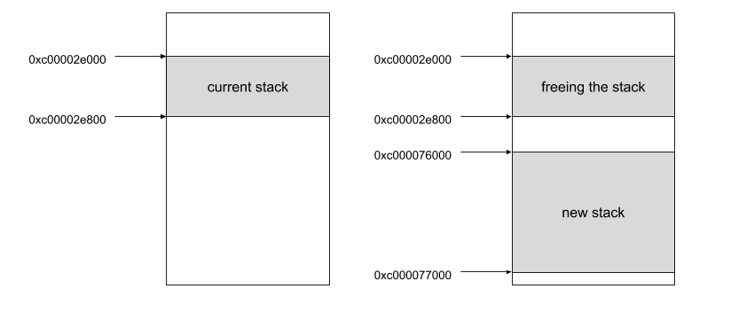
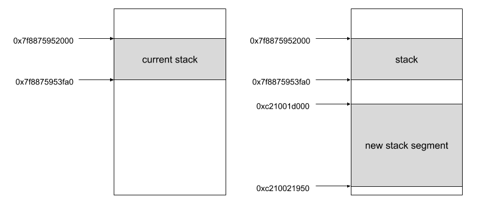

Go: Goroutine 的堆栈大小是如何演进的
ℹ️ 本文基于 Go 1.12
Go 提供了一套简单且智能的协程管理，简单是因为协程在最开始的时候只有 2Kb 大小，智能是指协程的大小是能随着实际情况变大缩小的。
至于堆栈的大小，我们可以在 runtime/stack.go 找到以下注释：
// The minimum size of stack used by Go code_StackMin = 2048
我们需要注意，在不同的版本，有些设定是不一样的，比如：
堆栈的大小之所以改变是因为堆栈分配的策略改变了，这个话题我们待会还会谈到。
动态堆栈大小
如果 Go 能自动地增大其堆栈的大小，也就是说它能判断是否需要分配堆栈。让我们用下面这个例子来分析下协程是如何工作的。
func main() {
a := 1
b := 2
r := max(a, b)
println(`max: `+strconv.Itoa(r))
}
func max(a int, b int) int {
if a >= b {
return a
}
return b
}
这个例子演示了取得两个整数中较大的数字。为了知道 Go 如何管理协程的堆栈，我们可以看下 Go 的汇编代码，使用命令 go build -gcflags -S main.go。整理得到有关堆栈分配的输出，它们能告诉我们 Go 都做了什么？
"".main STEXT size=186 args=0x0 locals=0x70
0x0000 00000 (/go/src/main.go:5) TEXT "".main(SB), ABIInternal, $112-0
[...]
0x00b0 00176 (/go/src/main.go:5) CALL runtime.morestack_noctxt(SB)
[...]
0x0000 00000 (/go/src/main.go:13) TEXT "".max(SB), NOSPLIT|ABIInternal, $0-24
这里有两个指令涉及到堆栈变化的：
CALL runtime.morestack_noctxt：这个方法会根据需要分配更多堆栈。NOSPLIT这个指令代表不需要栈溢出检查。与其相似的有 编译指令//go:nosplit。 如果我们查阅方法runtime.morestack_noctxt，它会从runtime/stack.go调用方法newstack：
func newstack() {
[...]
// Allocate a bigger segment and move the stack.
oldsize := gp.stack.hi - gp.stack.lo
newsize := oldsize * 2
if newsize > maxstacksize {
print("runtime: Goroutine stack exceeds ", maxstacksize, "-byte limit\n")
throw("stack overflow")
}
// The Goroutine must be executing in order to call newstack,
// so it must be Grunning (or Gscanrunning).
casgstatus(gp, _Grunning, _Gcopystack)
// The concurrent GC will not scan the stack while we are doing the copy since
// the gp is in a Gcopystack status.
copystack(gp, newsize, true)
if stackDebug >= 1 {
print("stack grow done\n")
}
casgstatus(gp, _Gcopystack, _Grunning)
}
当前堆栈的大小是通过 gp.stack.hi 与 gp.stack.lo 相减得到的，他们分别指向堆栈的起始位置和结束位置。
type stack struct {
lo uintptr
hi uintptr
}
然后，将当前大小乘以 2 并检查它是否超过允许的最大值（该大小取决于平台）：
// 64 位系统最大值为 1GB,32 位系统为 250MB.
// 使用十进制而不是二进制的 GB,MB 是因为
// 它们在堆溢出的报错信息中看起来更合适
if sys.PtrSize == 8 {
maxstacksize = 1000000000
} else {
maxstacksize = 250000000
}
现在我们知道了流程，那么我们可以写个简单的例子来验证。为了方便进行调试，我们将把在 thenewstack 方法中看到的常量 stackDebug 设置为 1 并运行。
func main() {
var x [10]int
a(x)
}
//go:noinline
func a(x [10]int) {
println(`func a`)
var y [100]int
b(y)
}
//go:noinline
func b(x [100]int) {
println(`func b`)
var y [1000]int
c(y)
}
//go:noinline
func c(x [1000]int) {
println(`func c`)
}
指令 //go:noinline 可以避免在 main 函数中，内联所有函数。如果内联是由编译器完成的，我们将不会看到每个函数中堆栈的动态增长。
这里是部分调试信息：
runtime: newstack sp=0xc00002e6d8 stack=[0xc00002e000, 0xc00002e800]
stack grow done
func a
runtime: newstack sp=0xc000076888 stack=[0xc000076000, 0xc000077000]
stack grow done
runtime: newstack sp=0xc00003f888 stack=[0xc00003e000, 0xc000040000]
stack grow done
runtime: newstack sp=0xc000081888 stack=[0xc00007e000, 0xc000082000]
stack grow done
func b
runtime: newstack sp=0xc0000859f8 stack=[0xc000082000, 0xc00008a000]
func c
我们可以看到堆栈大小增大了 4 次，实际上，函数会根据需要尽可能地增加堆栈。正如我们在代码中看到的，堆栈大小由堆栈的边界定义，所以我们可以计算新分配的堆栈的大小，根据指令 newstack stack=[...] 提供的当前堆栈边界的指针。
runtime: newstack sp=0xc00002e6d8 stack=[0xc00002e000, 0xc00002e800]
0xc00002e800 - 0xc00002e000 = 2048
runtime: newstack sp=0xc000076888 stack=[0xc000076000, 0xc000077000]
0xc000077000 - 0xc000076000 = 4096
runtime: newstack sp=0xc00003f888 stack=[0xc00003e000, 0xc000040000]
0xc000040000 - 0xc00003e000 = 8192
runtime: newstack sp=0xc000081888 stack=[0xc00007e000, 0xc000082000]
0xc000082000 - 0xc00007e000 = 16384
runtime: newstack sp=0xc0000859f8 stack=[0xc000082000, 0xc00008a000]
0xc00008a000 - 0xc000082000 = 32768
对协程内部的分析告诉了我们协程最开始的大小的确只有 2Kb，并且尽可能的在函数逻辑，编译阶段扩大大小，知道内存饱和，或者堆栈大小达到最大值。
堆栈分配管理
动态分配系统并不是影响我们的应用程序的唯一因素。它的分配方式也会产生巨大的影响。让我们试着从两个堆栈增长的跟踪记录来理解它是如何管理的。
runtime: newstack sp=0xc00002e6d8 stack=[0xc00002e000, 0xc00002e800]
copystack gp=0xc000000300 [0xc00002e000 0xc00002e6e0 0xc00002e800] -> [0xc000076000 0xc000076ee0 0xc000077000]/4096
stackfree 0xc00002e000 2048
stack grow done
runtime: newstack sp=0xc000076888 stack=[0xc000076000, 0xc000077000]
copystack gp=0xc000000300 [0xc000076000 0xc000076890 0xc000077000] -> [0xc00003e000 0xc00003f890 0xc000040000]/8192
stackfree 0xc000076000 4096
stack grow done
第一个指令显示当前堆栈的地址，stack=[0xc00002e000, 0xc00002e800] ，然后把它复制到一个两倍大的新空间上 copystack [0xc00002e000 [...] 0xc00002e800] -> [0xc000076000 [...] 0xc000077000]，4096 bits 长度，就和我们之前看到的一样。之前的堆栈现在被释放了，0xc00002e000。通过下方的图，可以帮助更直观的观察正在发生的事情

指令 copystack 复制整个堆栈，并将所有内容移动到这个新分配的堆栈。我们可以通过以下简单的代码来地验证这个逻辑：
func main() {
var x [10]int
println(&x)
a(x)
println(&x)
}
打印得到的地址：
0xc00002e738
[...]
0xc000089f38
地址 0xc00002e738 包含在我们在调试跟踪中看到的第一个堆栈地址 stack=[0xc00002e000, 0xc00002e800] 中，而 0xc000089f38 包含在最后一个堆栈边界 stack=[0xc000082000, 0xc00008a000] 中。它证实了所有的值已经从一个堆栈移动到另一个堆栈。
另外，有趣的是，当触发 GC 时，堆栈将视情况而缩小。
在我们的例子中，所有函数调用后，除了 main 函数中的堆栈外，不再有其它堆栈，因此当 GC 运行时系统将会缩小堆栈。为此，我们可以强制 GC 运行。
func main() {
var x [10]int
println(&x)
a(x)
runtime.GC()
println(&x)
}
调试信息显示了堆栈的缩小。
func c
shrinking stack 32768->16384
copystack gp=0xc000000300 [0xc000082000 0xc000089e60 0xc00008a000] -> [0xc00007e000 0xc000081e60 0xc000082000]/16384
如我们所见，堆栈大小已除以 2 ，并重新使用了先前的堆栈地址 stack = [0xc00007e000，0xc000082000]。 再一次，我们可以在 runtime/stack.go-rinklestack（） 中看到，收缩后的大小总是将当前大小除以 2：
oldsize := gp.stack.hi - gp.stack.lo
newsize := oldsize / 2
连续堆栈 VS 分段堆栈
把当前堆栈复制到另一个更大的堆栈空间的策略称为连续堆栈，相反的还有分段堆栈策略。Go 在 1.3 版本开始使用连续堆栈策略，为了看到两种策略的差异，我们将在 Go 1.2 的环境下运行同一个例子。同样，我们需要更新常量 stackDebug 以输出调试信息。由于在 1.2 版本的 runtime 是 C 编写的，因此我们不得不编译源代码。 结果如下：
func a
runtime: newstack framesize=0x3e90 argsize=0x320 sp=0x7f8875953848 stack=[0x7f8875952000, 0x7f8875953fa0]
-> new stack [0xc21001d000, 0xc210021950]
func b
func c
runtime: oldstack gobuf={pc:0x400cff sp:0x7f8875953858 lr:0x0} cret=0x1 argsize=0x320
当前堆栈大小为 8Kb stack=[0x7f8875952000, 0x7f8875953fa0]，8192 字节加上堆栈头信息。新创建的堆栈大小为 18864 字节大小（18768 字节加上堆栈头信息），内存分配信息如下：
// allocate new segment.
framesize += argsize;
framesize += StackExtra; // room for more functions, Stktop.
if(framesize < StackMin)
framesize = StackMin;
framesize += StackSystem;
因为常量 StackExtra 被设置为 2048，StackMin 被设置为 8192，StackSystem 被最小值被设置为 0，最大值为 512。因此我们的新堆栈由两部分组成：16016 ( frame size ) + 800 ( arguments ) + 2048 ( StackExtra ) + 0 ( StackSystem ).
一旦所有函数都被调用，新分配堆栈就被释放了(见 runtime:oldstack)，这种行为是促使 Golang 团队采用连续堆栈策略的原因之一：
如果在一个快速紧密的循环中，连续调用堆栈分配操作，那么分配/释放操作将会造成巨大开销。
由于分段堆栈的这个缺陷，Go 不得不将堆栈的最小值从 2Kb 加到 8Kb，以避免频繁的分配/释放操作，在采用连续堆栈策略后，又将其减小回 2Kb。
下方是一张分段堆栈策略的直观图：

总结
Go 的栈管理非常高效，也很容易理解。Golang 并不是唯一选择不使用分段堆栈的语言，Rust 也出于同样的原因决定不使用这个这个策略。